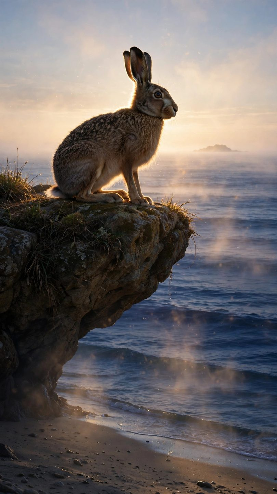
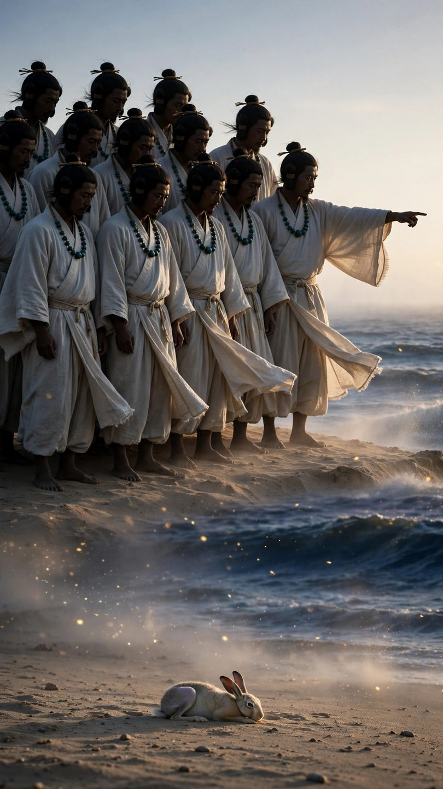
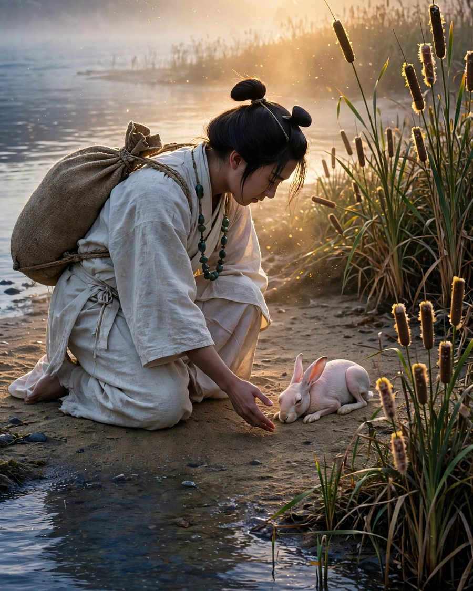
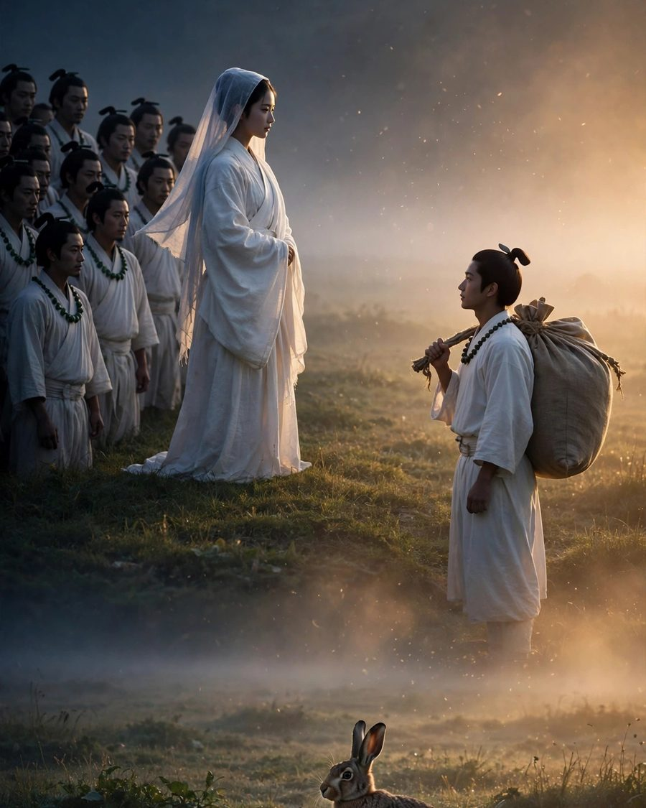

Kojiki, Part 1 · story 9 of 17
The Hare (素兎) of Inaba (稲羽)
稲羽の素兎

Ōanamuji-no-Kami (大穴牟遅神; Ōkuninushi-no-Kami), taken along as an attendant by the Eighty Deities (八十神) as they set out for Inaba (稲羽) to seek the hand of Yakami-hime, healed by the correct method a hare that was suffering after being skinned. The hare declared that it would be 大穴牟遅神 who would win Yakami-hime, and, just so, Yakami-hime rejected the Eighty Deities and answered that she would marry 大穴牟遅神.
The story
The Eighty Deities set out for Inaba (稲羽)
Ōkuninushi-no-Kami had many brothers, called the Eighty Deities (八十神), but they all came to yield the land to Ōkuninushi-no-Kami. The reason is as follows. The Eighty Deities each wished to marry Yakami-hime of Inaba (稲羽), and set out together for 稲羽; at that time they made Ōanamuji-no-Kami (大穴牟遅神; Ōkuninushi-no-Kami) carry a bag on his back and took him along as an attendant.
The naked hare at the cape of 気多*
When the party arrived at the cape (前, a headland) of 気多*, a naked hare was lying collapsed there. The Eighty Deities told the hare, "You should bathe in the salt water of the sea, expose yourself to the wind, and lie on the ridge of a high mountain." When the hare did as it was told, as the salt dried the skin of its body was split by the blowing wind, and it lay weeping, suffering from the pain.

The hare tells what happened
When Ōanamuji-no-Kami (大穴牟遅神), who came last, asked the reason, the hare told the following story. The hare, which was on 淤岐嶋*, had wanted to cross over here but had no means of doing so, so it tricked the wani (和迩) of the sea, proposing: "Let us compare which of our kin are more numerous. Bring all your companions and lie in a row from the island to the cape of 気多. I will step on you and count as I cross." When the wani lined up, it crossed by stepping on them and counting, but just as it was about to step down onto land it said, "You have been tricked," and was caught by the wani at the very end, which stripped off all its clothing (its fur). On top of that, because it followed the teaching of the Eighty Deities, its whole body was injured.
The teaching of Ōanamuji-no-Kami (大穴牟遅神)
So Ōanamuji-no-Kami (大穴牟遅神) taught it: "Go at once to this river mouth, wash your body in its water, take the kama-no-hana (蒲黄) of the river mouth, spread it out and roll about on it, and you will surely be healed so that your skin is as it was." When the hare did as it was told, its body became as it had been before. This is the hare (素菟) of Inaba (稲羽), and it is now called Usagi-gami (菟神).

What the hare told Ōanamuji-no-Kami (大穴牟遅神)
The hare told Ōanamuji-no-Kami (大穴牟遅神), "The Eighty Deities will never win Yakami-hime. Even though you carry the bag, it is you who will win her." And indeed Yakami-hime answered the Eighty Deities, "I will not listen to what you say. I will marry 大穴牟遅神."

A plain retelling of what the original text of the Kojiki says (no published translation has been used). The subheadings were added for readability, using the words of the text.
Key points of this story
- Main textŌanamuji-no-Kami (大穴牟遅神; Ōkuninushi-no-Kami) taught the hare, which was suffering after being skinned, to wash its body in the water of the river mouth and roll about on kama-no-hana (蒲黄) spread out beneath it, and the hare's body was healed as it had been before.
- Main textThe hare tricked the wani (和迩) by proposing a contest to compare the numbers of their kin, and crossed from 淤岐嶋* to the cape of 気多* by stepping on their backs; but just before it finished crossing it spoke of having tricked them, so it was caught by the wani and had its fur stripped off.
- Main textThe Eighty Deities (八十神) taught the injured hare a wrong method of healing, "Bathe in sea water and expose yourself to the wind," and made the hare's wounds even worse.
- Main textThe healed hare declared that Ōanamuji-no-Kami (大穴牟遅神) would win Yakami-hime, and, just so, Yakami-hime rejected the Eighty Deities and answered that she would marry 大穴牟遅神. The Kojiki begins telling this story as the reason why the Eighty Deities all yielded the land to Ōkuninushi-no-Kami.
- Compared with the Nihon ShokiIn the books on the Age of the Gods of the Nihon Shoki (Books 1 and 2), no passage corresponding to the story of the hare of Inaba (稲羽), the Eighty Deities and Yakami-hime could be confirmed. The Nihon Shoki records the same deity mainly under the name "Ōanamuchi" (大己貴).
- CommentaryAccording to the Kokugakuin University database of deity names, there is a view that the 素 in "素菟" means white and a view that it means naked. Also, because stories in which a land animal tricks water animals in order to cross the water are found widely abroad too, there is a view that it was originally an independent animal story unrelated to Ōkuninushi-no-Kami. [source, Japanese]
Deities and people, and the shrines that enshrine them
- Ōkuninushi-no-Ōkami大国主大神Enshrined at: Izumo Taisha, Hikawa Jinja (Ōmiya), Hokkaidō Jingū, Dewa Sanzan Jinja, Keta Taisha, Nikkō Futarasan Jinja, Hiyoshi Taisha, Tsushima Jinja, Toga Jinja, Takebe Taisha, Kanda Jinja (Kanda Myōjin), Minashi Jinja, Ōyamato Jinja, Taiheizan Miyoshi Jinja, Tsuno Jinja, Takase Jinja, Ōhirumemuchi Jinja, Kumano Nachi Taisha, Yaegaki Jinja, Ōkunitama Jinja, Kamikawa Jinja, Ōarai Isosaki Jinja, Okuni Jinja, Izumo Daijingū, Sakatsura-Isosaki Jinja, Ōgamiyama Jinja, Miho Jinja
- Usagi-gami (菟神)The hare that tricked the wani, had its fur stripped off, and was healed by Ōanamuji-no-Kami (大穴牟遅神). The original also calls it "the hare of 稻羽" (稻羽之素菟) and says that it is now called Usagi-gami.
- 八十神*The many brothers of Ōkuninushi-no-Kami (the Eighty Deities), who set out for Inaba (稲羽) to seek the hand of Yakami-hime and taught the hare a wrong method of healing.
- Yakami-hime (八上比賣)A goddess who lived in Inaba (稲羽); she rejected the proposals of the Eighty Deities and answered that she would marry Ōanamuji-no-Kami (大穴牟遅神).
- Wani (和迩)Sea creatures that were tricked by the hare into lying in a row in the sea, and at the end caught the hare and stripped off its fur.
- Kama-no-hana (蒲黃)What Ōanamuji-no-Kami (大穴牟遅神) taught the hare to spread out and roll about on; with it the hare's body was restored.
Select a deity's name to open its page in Shrine Note (names and scenes in the Kojiki and the Nihon Shoki).
How the Nihon Shoki differs
In Books 1 and 2 of the Nihon Shoki, no passage corresponding to the story of the hare of 稲羽, the Eighty Deities and Yakami-hime could be confirmed. The same deity is listed in variant account 6 of section 8 under names such as 国作大己貴命* as other names of Ōkuninushi-no-Kami (大国主神), and a story is told of his joining forces with Sukunahikona-no-Mikoto (少彦名命) to make the land.
亦號國作大己貴命Reference
In the original text (4 passages)
以水洗汝身，即取其水門之蒲黃(The teaching of 大穴牟遅神)* Wash your body with the water, and at once take the kama-no-hana of that river mouth (and spread it out).
此稻羽之素菟者也，於今者謂菟神也This is the hare (素菟) of Inaba (稲羽), and it is now called Usagi-gami.
雖負帒，汝命獲之(The hare's words) Even though you carry the bag, it is you who will win (Yakami-hime).
吾者不聞汝等之言，將嫁大穴牟遲神(Yakami-hime's answer) I will not listen to what you say. I will marry Ōanamuji-no-Kami (大穴牟遅神).
Sources and what the labels mean
A small * after a name in kanji means that its reading could not be confirmed from the sources used here, so the name is left in its original characters.
"Main text" is what the Kojiki itself says; "Compared with the Nihon Shoki" is a difference checked in the original text of the Nihon Shoki; "Commentary" is an interpretation checked against a public institution's explanation. Quotations are copied character for character from the critical text on Chinese Wikisource (〔 〕 marks the original small notes). Names whose reading could not be confirmed are left in kanji. The pictures are all AI-generated illustrations, not depictions of actual sacred objects, shrine buildings or people.